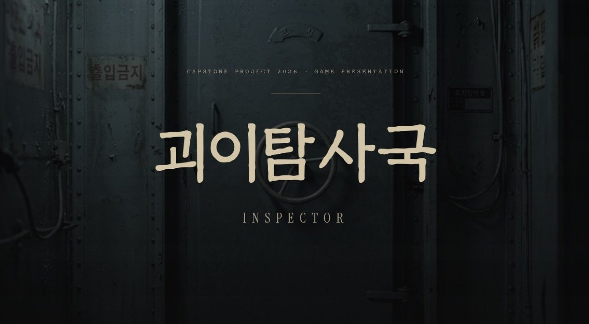
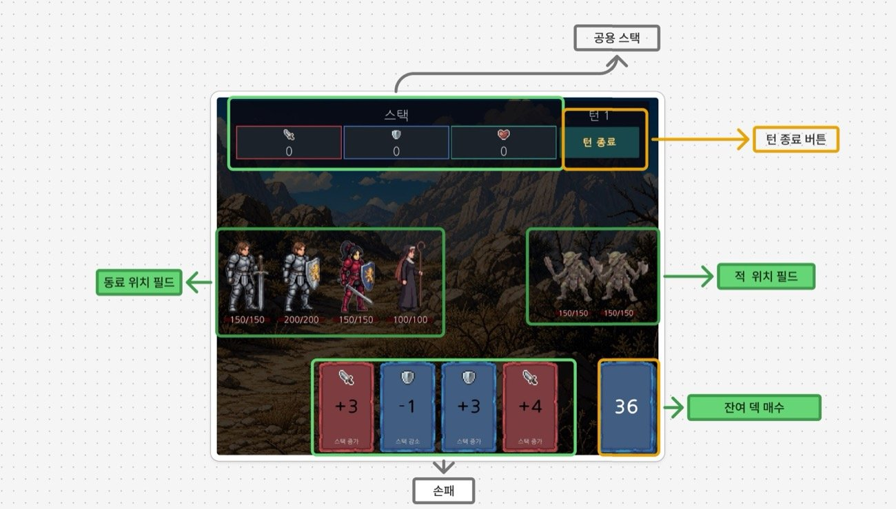
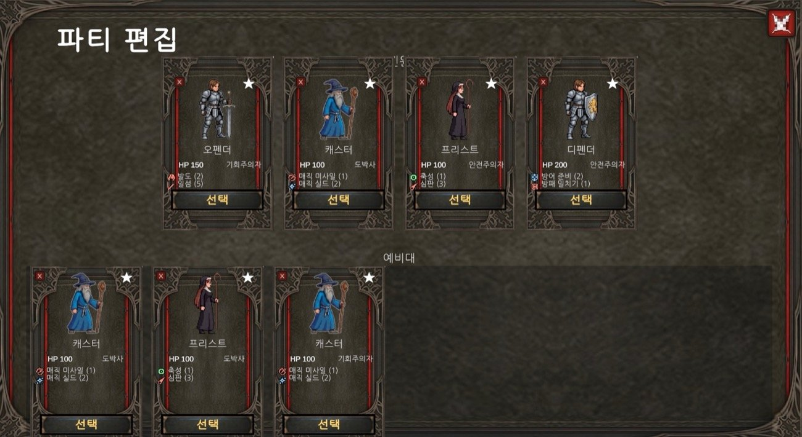
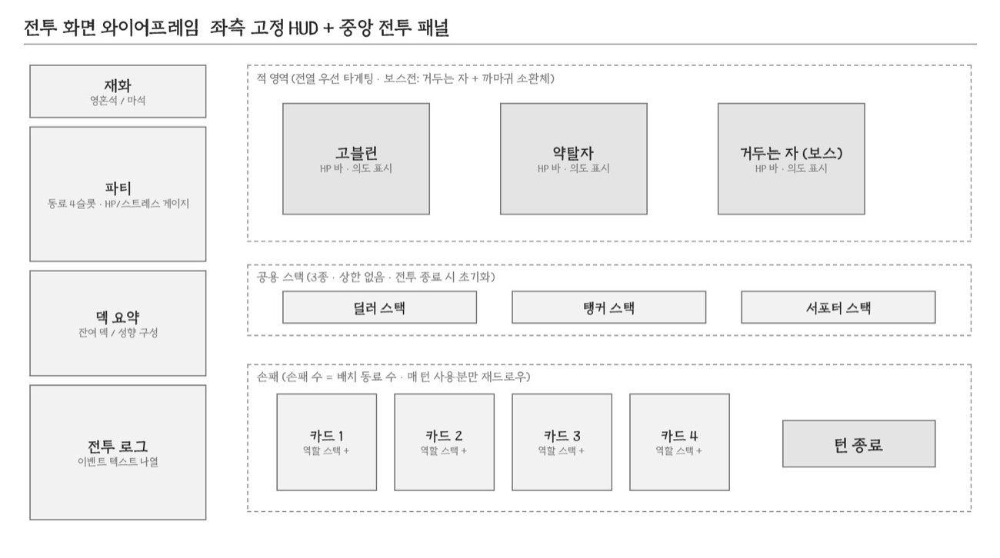
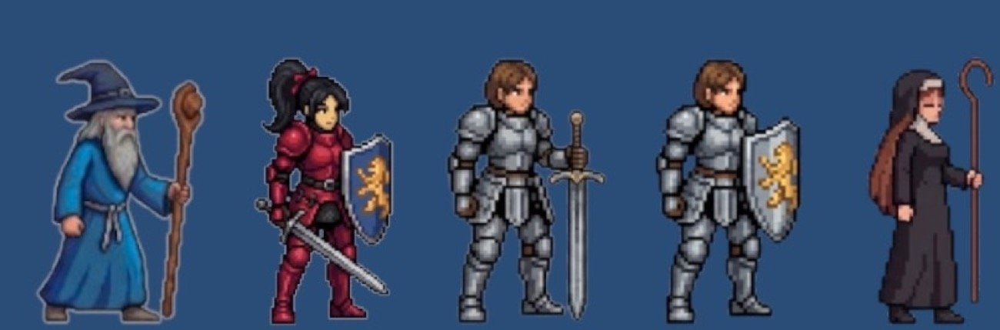
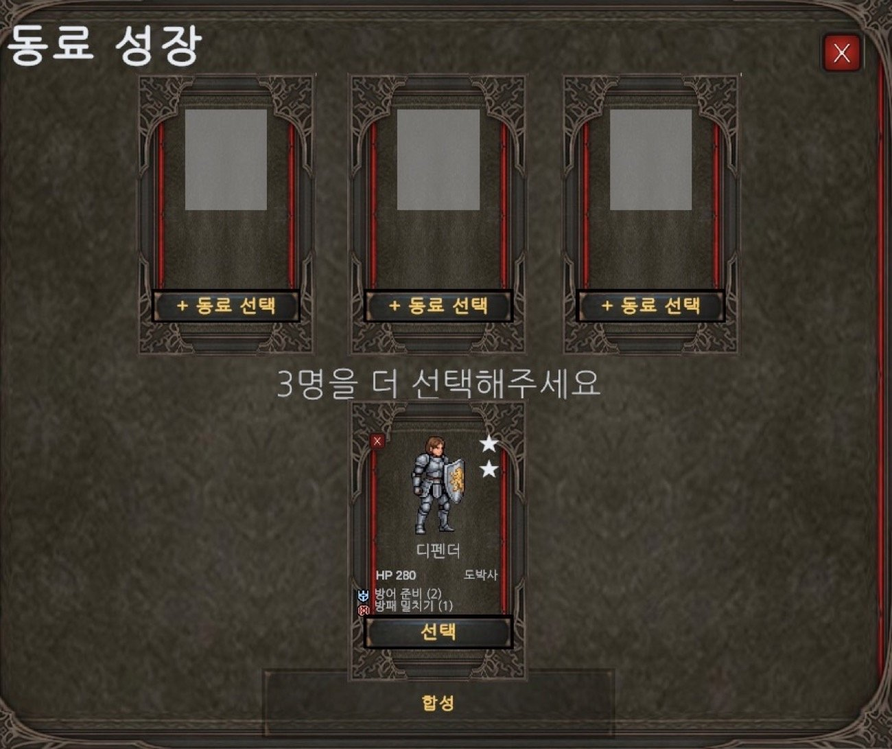
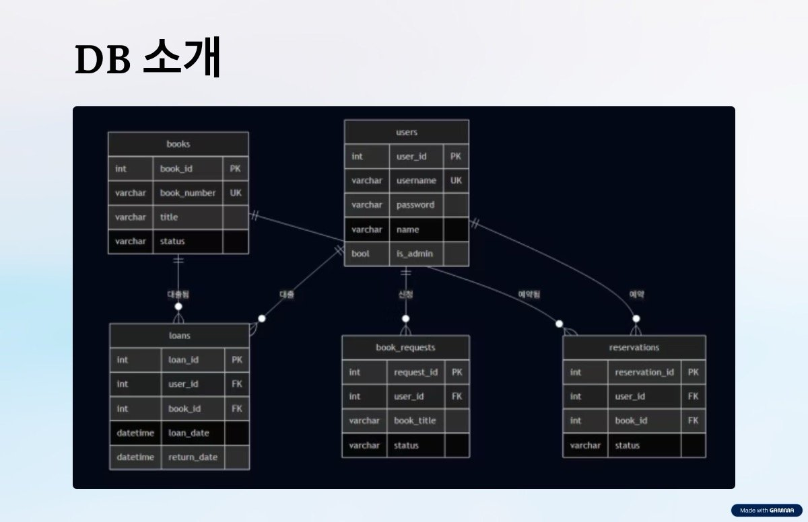
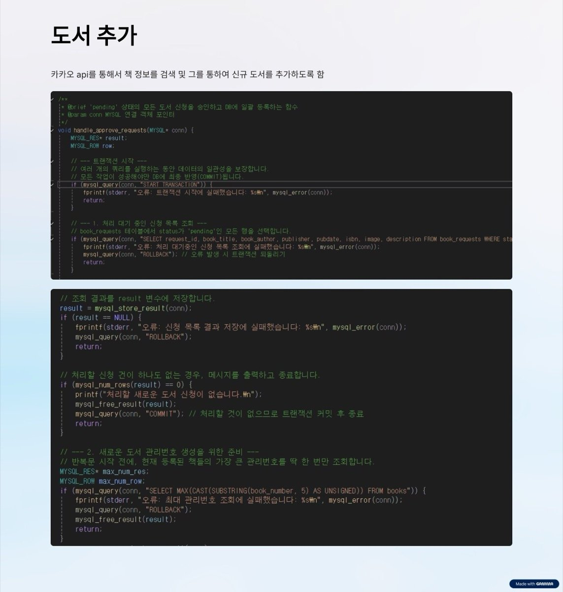

게임·보안·AI·IoT·웹까지, 분야는 달라도
‘문제 정의 → 시스템 설계 → 검증’이라는 한 가지 방식으로 기획합니다.
영남이공대학교 소프트웨어융합과
hirasawa224@gmail.com
OPEN THE DOOR. MANAGE THE ANOMALY.
FILE 00 · PROFILE서상호 PORTFOLIO
00
About Me
PROFILE / 자기소개
“복잡한 룰보다, 단순한 규칙 속 깊이 있는 플레이를.”
소프트웨어융합과에서 프로그래밍을 배우며 자연스럽게 게임을 ‘만드는 사람’이 되었습니다.
단순히 코드를 짜는 것을 넘어, 어떤 규칙이 재미를 만드는가를 고민하는 과정에서 게임 기획에 매료되었습니다.
캡스톤에서 3인 팀의 팀장이자 기획 총괄로 신작 「괴이탐사국: INSPECTOR」를 이끌었고,
나아가 보안(피싱 필터)·AI(고령층 음성 에이전트)·IoT(충전 스테이션)·웹(도서관)까지
분야를 가리지 않고 직접 시스템을 기획했습니다.
강점은 한 분야의 깊이보다 ‘문제 정의 → 시스템 설계 → 검증’이라는 한 방식을 여러 도메인에 적용하는 폭입니다.
기술을 알기에 개발자와 같은 언어로 소통하며 실현 가능한 기획을 만듭니다.
CORE STRENGTHS · 핵심 역량
도메인 불문 시스템 기획 — 게임·보안·AI·IoT·웹, 문제를 규칙·데이터로 분해·설계
게임 기획·밸런스 — 장르 융합, 코어 루프, 데이터 주도(SO/JSON) 확률 통제
브랜딩 · 디렉팅 — 세계관·톤앤매너·UX/오디오 시스템 정의
협업 · PM — 팀장, 간트 일정관리, Git 기반 협업
6수록 프로젝트
10+수상 · 선정
15+교육 수료
—
Contents
목차
01 Skills & Tools · 보유 역량p.03
MAP Project Map · 프로젝트 맵p.04
04 Awards · 수상·선정 내역p.16
02 Project · 괴이탐사국 INSPECTORp.05
05 Certificates · 교육·자격p.17
02.A In-Game Screens · 게임 화면p.09
06 Activities & Global · 활동p.18
07 Work Experience · 경력p.19
02.B Brand Guideline · 브랜드 기획p.10
08 Self-Study · 자기주도 학습p.20
03 Project · 피싱 필터 (2026 동상)p.11
03.A Problem & Visuals · 피싱 자료p.13
A Appendix · 수상 증빙p.21
03.B Selected Projects · 도메인 시스템 기획p.14
B Appendix · 교육·자격 증빙p.22
SEO SANGHO
FILE 01 · CAPABILITIES서상호 PORTFOLIO
01
Skills & Tools
보유 역량
게임 기획
시스템/메커닉 기획 · 코어 루프 설계
콘텐츠·레벨 기획 (동료·적·노드·상태이상)
밸런싱 (기대값·변동폭 기반 확률 설계)
세계관·시나리오·서사 연출
UI/UX 기획 · 튜토리얼 설계
기획서·가이드라인 문서화
엔진 · 언어
UnityC#PythonJavaJavaScriptCPHPMySQL
데이터 · 협업 설계
ScriptableObjectJSON 데이터 설계Git / GitHub오브젝트 풀링
데이터 · AI
데이터 분석 — pandas, 통계·전처리·시각화
컴퓨터 비전 — Python & OpenCV
생성형 AI 활용 — Google AI / Prompting Essentials
빅데이터·가명처리 실무 교육 이수
도구 · 기타
MS Office — Excel Expert (Office 2016) 인증
3D 프린팅 · 스마트팩토리 · 아두이노/TinkerCAD
디자인 씽킹 기반 문제 정의·아이디어 발상
발표·디렉팅 — 캡스톤 발표 진행
기획자로서의 차별점
“읽히는 기획서를 씁니다.” — 시스템을 다이어그램·코어루프·데이터 구조로 분해해 개발자가 바로 구현할 수 있게 전달하고,
ScriptableObject·JSON으로 데이터를 분리해 밸런스를 빠르게 조정합니다. 기술을 알기에 실현 가능한 기획을 합니다.
SEO SANGHO
FILE 01.M · PROJECT MAP서상호 PORTFOLIO
MAP
프로젝트 맵
ONE METHOD · MANY DOMAINS
분야가 달라도 좋은 기획의 방식은 같습니다. 6개 프로젝트를 관통하는 한 가지 사고입니다.
공통 기획 방식 · ONE METHOD
① 문제 정의 사용자·맥락 파악
→
② 구조 분해 규칙·데이터로 분해
→
③ 시스템 설계 메커닉·아키텍처
→
④ 검증 빌드·데이터·수상
6개 도메인, 같은 기획 DNA
프로젝트
도메인
핵심 시스템 기획
역할 · 성과
괴이탐사국 INSPECTOR
게임
간접 전투·덱·동료 성향·밸런스 시스템
팀장·총괄 / 캡스톤 MVP
피싱 필터
보안 SaaS
3단 레이어 방어 파이프라인·수익모델
기획·PM / 2026 동상
디지털 동반자
AI 에이전트
음성 에이전트·복지/안전 연계 시스템
기획 / 정부 우수참여자
차세대 모듈형 충전 스테이션
IoT · 제품
모듈 적층·자동 전력 배분·IoT 모니터링
제품기획(팀) / 2024 입상
산불 마이크로캡슐 소화기
재난 · 제품
고온 감응 작동·약제/재료 비교 설계
기획 / 2025 입상
작은 도서관
웹 · 백엔드
DB(5테이블)·대출/예약/신청 시스템
단독 / GitHub 공개
강점은 ‘폭’입니다. 게임에서 단련한 시스템 설계를 다른 분야 문제에도 적용해,
빌드·수상·정부 선정 등 작동하는 결과물로 이어갔습니다.
SEO SANGHO
FILE 02 · FLAGSHIP PROJECTTEAM 578
FLAGSHIP
CAPSTONE 2026 · 팀장 / 기획 총괄
괴이탐사국 : INSPECTOR
DECK-BUILDING × AUTO-BATTLER × ROGUELIKE HYBRID
카드가 적을 직접 공격하지 않습니다. 카드는 ‘변수를 만드는 도구’ —
카드로 공용 스택을 쌓으면 배치된 동료가 자동으로 싸우는 간접 전투(Indirect Combat) 구조의
전략 덱빌딩 게임입니다.
3팀원 (팀장)
4개월 개발
3빌드 마일스톤
MVP코어 검증 완료
PROJECT INFO
장르
로그라이크 · 덱빌딩 · 오토배틀러
플랫폼
PC (Windows) 우선
엔진/언어
Unity 6000.3.9f1 · C#
데이터
ScriptableObject + JSON · PlayerPrefs
협업
Git / GitHub (기능별 브랜치)
기간
2026.03 – 2026.06
MY ROLE · 담당
기획 총괄 · 디렉팅 · 팀장
전체 시스템 기획 & 코어 루프 설계
밸런스 데이터 설계 (성향·확률·재화)
브랜드 가이드북 · 세계관 디렉팅
일정(간트)·역할 분담·QA 총괄
최종 발표 진행
OPEN THE DOOR. MANAGE THE ANOMALY.
FILE 02 · SYSTEM DESIGN괴이탐사국 INSPECTOR
02
기획 의도 & 시스템 설계
DESIGN INTENT
기획 의도 — “설계와 운명이 교차하는 덱빌딩”
포켓몬 카드의 턴제 자원 관리, 발라트로의 직관적 UI, 슬레이 더 스파이어의 덱빌딩을 재조합해,
카드가 직접 타격하지 않고 ‘전투의 변수’를 생성하는 간접 전투를 구현했습니다.
“영웅이 아닌, 살아남는 소시민”이라는 테마로 플레이 로그가 곧 나만의 생존기가 되는 경험을 목표로 했습니다.
CORE LOOP · 코어 루프 (8단계)
노드 선택
→
카드로 스택 생성
→
동료 자동 전투
→
상태/스트레스
→
보상 획득
→
다음 노드
차별화 시스템 4가지
01 · 간접 전투
카드 → 역할별 공용 스택 → 동료 자동 행동. 카드의 스택 수치는 동료 성향(Affinity)에 따라 사용 순간 랜덤 확정 → ‘설계와 운명’의 긴장.
02 · 배치 전략
동료 행동이 배치 순서로 고정. 미행동 동료는 다음 턴 스택 +1 & 우선권 → 리스크-리턴 구조.
03 · 스트레스
정신 압박 자원(0–100). 51↑ 성능 저하, 100 도달 시 패닉. 동료 사망 시 전원 +20 → 연쇄 위험.
04 · 이중 재화 영혼석(런 내 소비) + 마석(영구 메타). 단기 화력 vs 장기 성장 의사결정. 패시브 15종 + 시그니처 5종 해금.
밸런스 철학 — “통제된 랜덤”
성향
특징
기대값 / 변동
안전주의자
작고 확실한 결과
기대값 ≈ +0.6 · 변동 ↓
도박사
크게 출렁이는 결과
기대값 ≈ +0.6 · 변동 −5/+5
→ 모든 성향의 기대값은 동일하게 맞추고 ‘변동 폭’만 다르게 설계. 어떤 성향을 편성하느냐로 운의 크기 자체를 고르는 구조 = 운을 ‘관리’하는 전략.
SEO SANGHO
FILE 02 · SYSTEM DATA괴이탐사국 INSPECTOR
02
시스템 수치 & 밸런스
DATA & BALANCE
기획의 핵심은 ‘수치로 의도를 통제하는 것’. 아래는 INSPECTOR의 주요 밸런스 규칙을 수치로 정리한 것입니다.
동료 역할 · 행동 규칙
역할
소비 스택 → 행동
딜러
딜러 스택 → 피해
탱커
탱커 스택 → 실드
서포터
서포터 스택 → 회복
배치 순서대로 자기 역할 스택을 소비해 자동 행동
미행동 시 → 다음 턴 해당 스택 +1 & 행동 우선권 (리스크-리턴)
스트레스 (0–100)
구간
효과
51 초과
스킬 성능 저하 · 받는 스트레스 증가
100 도달
패닉 (공포 경직 / 과호흡)
동료 사망 시
전원 +20 (연쇄 패닉 위험)
이중 재화 · 메타 성장
재화
용도
지속
영혼석
런 내 소비(용병 모집 등)
런 한정
마석
패시브·시그니처 해금
영구
마석 패시브 15종 + 시그니처 5종, 런 시작 시 해금분 중 1개 무작위 배정
전체 해금까지 약 6–9런 (회차마다 다른 플레이)
자원 고갈 · 적 AI
탈진 — 덱 소진 후 드로우 불가 시 매 턴 전원 5 피해
적 기본: 앞열 우선 공격(예측 가능)
변수: 가중치 룰렛 · 일부 ‘체력 최저 아군’ 타겟팅
보스 ‘거두는 자’: 상태머신으로 국면별 패턴 전환
MVP 검증 범위
5동료
3적 유형
4노드 유형
15–20분목표 플레이타임
고정 6단계 시퀀스(시작→전투→용병소→전투→화톳불→보스)를 안정적으로 완주하며 코어 루프 정상 동작을 검증하는 데 집중.
SEO SANGHO
FILE 02 · CONTENT & PROCESS괴이탐사국 INSPECTOR
02
콘텐츠 · 개발 과정 · 기여
CONTENT / PROCESS
MVP 콘텐츠 범위
5동료 (딜/탱/서폿)
3적 유형
4노드 유형
MVP 목표는 ‘양’이 아니라 코어 루프가 재미있게 도는가의 증명. 카드→스택→자동전투→스트레스→마석 성장의
핵심 고리를 한 바퀴 완결하는 데 집중 (목표 플레이 15–20분).
시스템 구성 요소
덱·카드동료 성향전투/상태이상스트레스재화·보상용병소성급(★)노드맵튜토리얼보스 상태머신 AI오디오데이터 구조
개발 일정 2026.03 – 06
3월 4–5주아이디어 협의 · 시스템 기획 · 간트 설정
4월 1–2주시스템 기획 완료 · 개발 착수 · 1차 빌드
4월 3–5주전투 코어 루프·상태이상 · 2차 빌드 · JSON 전환
5월 1–3주적 확장 · 보스 AI · 용병소 · UX 통합 · 3차 빌드
5월 4–5주마석 메타 성장 · 콘텐츠 기획 완료
6월 1–2주노드맵 재설계 · 튜토리얼 · MVP 완료 · QA
6월 3주최종 발표
MY CONTRIBUTION · 기획자로서 한 일
장르 융합 콘셉트 정의 & 전체 시스템 기획
코어 루프·차별화 메커닉(간접 전투) 설계
동료·적·노드·상태이상 콘텐츠 기획
밸런스 데이터(성향·확률·재화) 설계
세계관·서사·브랜드 가이드북 디렉팅
팀 일정 관리 · QA · 최종 발표 진행
가장 큰 도전 & 해결 (팀장으로서) — 짧은 아이디어 회의·구현은 다들 집중해 빠르게 해냈지만,
한 학기 단위의 장기 과제에서는 시간 배분과 팀원 간 의사소통이 더 큰 난관이었습니다.
그래서 작업을 ‘할 수 있는 것 · 해야 하는 것 · 하면 좋은 것’으로 빠르게 나눠 우선순위대로 분배했고,
덕분에 차질 없이 계획한 대로 MVP를 완성했습니다.
SEO SANGHO
FILE 02.A · IN-GAME SCREENS괴이탐사국 INSPECTOR
02.A
게임 화면
IN-GAME SCREENS

『괴이탐사국: INSPECTOR』 타이틀 — “Open the door. Manage the anomaly.”

전투 화면— 동료 자동 전투 + 카드·공용 스택 UI

파티 편성— 배치 순서 기반 전략 구성

동료 유닛 5종 (딜/탱/서폿)

카드 · 공용 스택 시스템

용병소 — 마석 메타 성장
실제 Unity 빌드(MVP) 화면 — 동료 5종 · 적 3종 · 노드 4종으로 코어 루프 완주 검증
SEO SANGHO
FILE 02.B · BRAND DIRECTION괴이탐사국 INSPECTOR
02.B
브랜드 마스터 가이드북
BRAND & DESIGN SYSTEM
게임 시스템을 넘어, 하나의 브랜드로서 일관된 정체성을 정의했습니다. 전략·페르소나·비주얼·UX·오디오까지 아우르는 마스터 가이드북을 직접 작성했습니다.
BRAND STRATEGY
브랜드명
국내 괴이탐사국 / 해외 INSPECTOR (이원화 브랜딩)
한 줄 정의
냉철한 조사관이 되어 괴이를 통제하고 조직의 비밀을 파헤치는 지적 카타르시스의 덱빌딩 시뮬레이션
핵심 타깃
매너리즘 느낀 전략 게이머 · SCP/백룸 오컬트 헤비 유저
태그라인
“우리는 괴이를 두려워하지 않는다. 다만 분류할 뿐.” Open the door. Manage the anomaly.
TARGET PERSONA · 3종
뇌세포풀가동 (27, 전략 게이머) — 양산형 오토배틀러에 매너리즘, 새로운 규칙을 갈망
백룸조사관A (22, 오컬트 탐닉자) — 1차원 점프 스케어에 피로, 깊은 서사 추구
서류에파묻힌자 (32, 스마트 직장인) — 퇴근 후 가볍게 매니징할 세련된 게임
VISUAL SYSTEM · 컬러 팔레트
Carbon Charcoal #1A1C1E · 70% 배경
Manila Kraft #D2C4A7 · 25% 서류/패널
Phosphor Green #00FF66 · 5% 경고/포인트
타이포그래피
Mono (JetBrains/D2Coding) — 전투 UI·스탯·로그
Cold Grotesque (Inter/Pretendard) — 타이틀·공문
Archival Serif (명조/타자기) — 수첩 서사·떡밥
UX / 오디오 — “담담함의 규칙”
‘수첩 수령 → 철문 통과’ 출동 의식으로 멀티버스를 일관된 톤으로 포섭. 전투 진입 시 화려한 스킬음 대신
서류 펼치는 소리·무전 노이즈만 → 전투를 ‘냉철히 처리할 업무’로 인식시킴.
※ 본 포트폴리오 전체가 INSPECTOR 브랜드 시스템(Charcoal / Kraft / Phosphor Green · 모노스페이스 · 브래킷 프레임)으로 디자인되었습니다.
SEO SANGHO
FILE 03 · KEY PROJECTPHISHING FILTER
AWARD 2026
KEY PROJECT · 2026 창의 아이디어 동상
피싱 필터 Phishing Filter
SOCIAL ACCOUNT · 3-LAYER PHISHING DEFENSE
이메일도, 단순 URL 검사도 놓치는 소셜 DM 피싱을 정조준한 보안 솔루션.
DNS → 리다이렉트 → DOM의 3단 레이어로 링크를 실제 렌더링까지 분석해 위험 점수를 반환합니다.
동상2026 창의 아이디어
4.2Judge Mode / 5.0
3방어 레이어
980억2024 피싱 피해액
PROJECT INFO
유형
보안 SaaS · 창업 아이디어
분야
소셜 DM 피싱 방어
핵심 기술
FastAPI · Docker · Playwright · Python
보안 DB
PhishTank · OpenPhish · DoH
성과
2026 창의 아이디어 경진대회 동상
팀
2인 (PM·기획 / 백엔드·인프라)
MY ROLE · 담당
기획 · PM
보안 사각지대(소셜 DM) 문제 정의
3단 레이어 방어 아키텍처 기획
경쟁 분석 · 수익 모델 · GTM 전략 설계
시장 규모 산정 · 마일스톤 로드맵
발표 자료 제작 & 발표
WE PROTECT WHAT MATTERS.
FILE 03 · SYSTEM & BUSINESS피싱 필터 PHISHING FILTER
03
아키텍처 & 사업화
3-LAYER / BUSINESS
3단 레이어 방어 파이프라인
Layer 1 · DNS 필터링
DoH 리졸버 + PhishTank/OpenPhish 교차 검증, Redis 캐시(TTL 1h), 10ms 이하 레이턴시. 악성 도메인 즉시 차단.
Layer 2 · 리다이렉트 추적
httpx 비동기 리다이렉트 추적, QR 코드 URL 추출, 화이트리스트 관리. 최종 목적지 확인 후 고지.
우수참여자(상위 1만명) 선정 · 참여포상 지급대상 | 담당: 기획 — 문제 정의·기능 구조·사용 시나리오·UX 설계
2025 · 개인 프로젝트 · 웹 풀스택
작은 도서관 — 사용자·관리자 웹 플랫폼
도서 등록·검색·대출·예약·신청을 사용자/관리자 권한으로 처리하는 도서관 시스템. C·PHP·MySQL로 직접 구현했습니다.
CPHPMySQLKakao APIGit
DB 설계 — 5개 테이블 ERD(books·users·loans·reservations·book_requests), FK 관계
안정적 처리 — 트랜잭션·prepared statement, 카카오 API로 도서정보 자동 등록
형상 관리 — GitHub se0sangh0/library

DB ERD — 5개 테이블 관계 설계

구현 — 트랜잭션 기반 도서 등록(C·MySQL)
담당: 기획·DB 설계·백엔드 개발 전 과정 (단독)
SEO SANGHO
FILE 03.B · SELECTED PROJECTS서상호 PORTFOLIO
03.B
도메인 시스템 기획 (2/2)
PRODUCT & GAME
2024 · 창의적 종합설계 (팀) · 창의 아이디어 입상
차세대 모듈형 충전 스테이션 (공모 출품명: 모듈형 파워스테이션)
멀티탭 난립과 충전 규격 불일치 문제를 적층형 모듈로 해결한 IoT 충전 제품. USB·AC 타입 ‘플로어’를 포고핀(pogo pin)으로 적층하고, 플로어별 인식칩셋이 전력을 자동 배분합니다.
사용 패턴 학습 → 대기전력 자동 차단(전기 요금 절감)
PD/QC 프로토콜·IoT 멀티탭 → 앱에서 전력 모니터링·요금 분석
걸쇠 결합 구조로 비인증 장치 연결 방지
제품 기획모듈화IoT확장성
담당: 제품 컨셉 · 확장성/모듈화 구조 기획 (3인 팀)
2025 · 창의 아이디어 경진대회 입상
산불 초기대응 마이크로캡슐 소화기
소방대 도착 전 선제 진압을 위한 고온 감응 자동작동 소화 캡슐. 산지 환경에 맞춰 약제·재료·반응 방식을 비교 분석해 설계했습니다.
동작: 고온 노출 → 외벽 열분해 → 압력 상승 → 파열·분사 (≈50m 확산)
소화약제 비교(Phos-Chek / Miracle Foam / KFRI) 후 친환경 선택
반응방식 4종(고압가스·화약·센서·알칼리) 장단점 분석
문제 정의시스템 설계비교 분석재난 대응
담당: 문제 정의 · 시스템 개념 설계 · 약제/재료 비교 검증
WHERE IT STARTED · 2024
로스트아크 아이템 강화 비용 계산기 (Scratch)
1학년 첫 프로그래밍 과제에서 즐겨하던 게임의 아이템 강화 시스템(재화·확률·단계)을 직접 분석해
목표 레벨까지의 소요 골드를 산출하는 계산기를 구현했습니다. 컴퓨팅 사고와 알고리즘(선택정렬·이진탐색)을 적용한,
게임 시스템을 ‘분석하고 설계’하려는 관심의 출발점이었습니다.
SEO SANGHO
FILE 04 · AWARDS서상호 PORTFOLIO
04
Awards
수상 · 선정 내역
GAME INDUSTRY · 2025
대구글로벌게임센터 · 대구게임아카데미 — 우수교육생 선정
게임 분야 전문 교육기관인 대구글로벌게임센터 대구게임아카데미의
「주니어 개발자를 위한 프로그래밍 필수 개념」 과정에서, 출결·태도·성과물 평가 우수자(우수교육생)로 선정되어 특전(IT기기) 포상을 받았습니다.
연도
수상 · 선정 내역
구분
2025
대구게임아카데미 우수교육생 선정
게임 · 선정
2026
모두의 아이디어 우수참여자 선정(정부·AI)
정부 · AI
2024
전국 창의코딩 경진대회 은상
코딩 / 전국
2025
전국 창의코딩 경진대회 동상
코딩 / 전국
2024
교내(EPIC) 창의코딩 경진대회 동상
코딩 / 교내
2026
창의 아이디어 경진대회 동상(피싱 필터)
아이디어
연도
수상 · 선정 내역
구분
2025
창의 아이디어 경진대회 입상
아이디어
2024
창의 아이디어 경진대회 입상 (모듈형 파워스테이션)
아이디어
2025
미래산업 수요특화형 교육 최우수상 (Drawing Machine)
창의·제작
2025
파란사다리 성과교류회 우수상 (교내)
발표 · 교류
2026
희망사다리 장학생 선정 (한국장학재단)
장학 · 인재
2024
전문기술인재장학금 (장학증서)
장학 · 인재
※ 전국 코딩대회 2년 연속(은상·동상) · 아이디어 경진대회 3년 연속 수상 · 게임아카데미·정부 공모 우수자 선정 · 장학생 2회 — 꾸준히 문제를 정의하고 풀어내는 기획 역량을 증명. 상세 증빙은 부록 A 참조.
SEO SANGHO
FILE 05 · TRAINING서상호 PORTFOLIO
05
Certificates & Training
교육 · 자격
AI · 데이터
Google AI Essentials
Google Prompting Essentials
Gemini Academy (Google for Education)
[AI-X] 재학생 AI역량 강화 프로그램
산업체 수요특화형 AI 교육
산업체 수요특화형 빅데이터 교육
데이터 가명처리 실습 교육 (대구)
파이썬 & OpenCV 컴퓨터 비전 교육
제조 · 융합 · 게임
주니어 개발자 프로그래밍 필수 개념(대구게임아카데미)
3D 프린팅 특화 교육
스마트팩토리 분야 특화 교육
제주형 스마트팩토리 캠프
디자인 씽킹 교육
창의적 체험 활동 프로그램
자격 · 어학
Microsoft Excel Expert (Office 2016)
리눅스마스터 2급 — 응시
“최신 기술을 빠르게 흡수하는 기획자.”
생성형 AI·데이터·제조 융합까지 폭넓게 학습하며, 게임 기획에 신기술을 접목할 수 있는 기술 감각을 갖췄습니다.
총 15건+ 교육 수료 · GAME-ACADEMY / AI / DATA / SMART-FACTORY / DESIGN-THINKING
SEO SANGHO
FILE 06 · ACTIVITIES서상호 PORTFOLIO
06
Activities & Global
대외활동 · 글로벌
GLOBAL · 2025
파란사다리 글로벌 연수 (호주) — 대표학생
연수에 선발돼 수료했고, 대표학생(반장)으로 현지 운영사를 도와 그룹 운영을 지원했습니다.
귀국 후 성과교류회 우수상 수상. → 낯선 환경에서의 리더십·조율, 커뮤니케이션.
현장 · 창업 (진행 중)
리빙랩 (캠퍼스타운 챌린지) — 현장에서 ‘우리가 가정한 문제’와 ‘사용자의 실제 문제’의 괴리를 확인하고 좁혀가는 법을 익히는 중
실전창업패키지 — 창업 실무·기회·도전 요소 교육 (브랜드 전략·솔루션 기획)
모두의 창업 프로젝트 · 체험단 (GSP)
학습 · 사회 참여
SW 파일럿 (대구 DIP, 2025) — 동료 학습·자기주도 학습 방향 정립
봉사활동 — 급식·캠프·자연공원 등 (인증)
민방위 교육 이수 (2024–2026)
현장에서 배운 ‘문제 정의’. 리빙랩에서 사용자의 실제 문제와 우리 가정 사이의 괴리를 좁히는 법을 익혔습니다.
이는 모든 기획의 1단계 — 문제를 제대로 정의하는 역량으로 이어집니다.
SEO SANGHO
FILE 07 · WORK EXPERIENCE서상호 PORTFOLIO
07
경력
WORK EXPERIENCE
기술과 사람, 둘 다 다뤄본 경험.
PC 설치·수리, 기술 상담, 앱 헬프데스크로 기술을 이해하고 고객과 직접 소통하며 사용자 관점을 길렀습니다.
재학 중 교내 도서관에서 2년 넘게(현재까지) 근무 중이고, 입학 전에도 1년 안팎씩 꾸준히 일한 것이 책임감의 근거입니다. 이 현장 경험이 ‘개발자와 같은 언어로 소통하고 사용자를 이해하는’ 기획의 바탕입니다.
근무처
기간
역할
핵심 경험 · 배운 점
교내 도서관(재학 중 근로)
2024 여름~현재 약 2년 · 재직 중
도서 대출·반납·정리, 이용자 응대
2년 이상 꾸준히 근속(현재 진행) — 도서관 운영 경험이 ‘작은 도서관’ 웹 프로젝트로 연결
세원테크
약 1년 6개월
PC 설치·납품·유지보수
설치/AS 스케줄 관리, 현장 대응력
삼성전자서비스
약 1년 3개월
영상제품 기술상담 · PC/소형가전 수리
고객 눈높이 기술 설명, 불량 케이스 진단, 서비스 마인드
돌보미(간병 플랫폼)
1년
간병 앱 헬프데스크 (사용 지원)
사용법 안내·원격 점검 지원, 이슈 보고 — 정확한 내용 전달
대구보훈병원(인턴십)
5개월
기계실 — 시설 인턴
공조냉동기 모니터링, 병원 시설 민원 응대
㈜티포엘
2개월
측정실 제품 실험 보조원
제품 측정·실험 보조 — 데이터 취급
경북기계공업고(금형제작과)
6개월
교육지원 실무원
실습 기자재 관리, 교육 지원
CU 편의점
1년
진열·납품
선입선출 재고관리, 성실·꾸준함
그 외 단기 근무 일부(서비스·유통). → 기술·연구·교육·서비스 전반의 현장 경험이 사용자와 현장을 이해하는 기획의 바탕입니다.
SEO SANGHO
FILE 08 · SELF-STUDY서상호 PORTFOLIO
08
Self-Directed Learning
자기주도 학습
알고리즘 · CS 기초 → 수상으로 증명
백준 온라인 저지 단계별 학습 (17+ 노트북)
입출력/사칙연산정렬스택2차원 배열약수·소수브루트포스기하 기초수학
스스로 쌓은 알고리즘 실력으로 「전국 창의코딩 경진대회」에서 2년 연속(은상·동상) 수상했습니다. + 수학올림피아드 문제 풀이로 논리적 사고력 강화.
데이터 분석
‘데이터분석과 사례’ 학습 포트폴리오 (목표 A+)를 직접 정리.
pandas — Series/DataFrame, 인덱싱, 결측·이상치 처리
통계 — 사분위수·상관분석·Z-score
시각화 — 막대/원/히스토그램/산점도
“스스로 공부해서, 결과로 증명한다.” 수업 외 시간에 알고리즘과 데이터 분석을 꾸준히 파고든 노력이
전국 단위 코딩대회 2년 연속 수상이라는 성과로 이어졌습니다. 기획에 필요한 수치 감각과 논리적 분해력은 이렇게 쌓았습니다.
THANK YOU
문을 열고, 다음 프로젝트로.
OPEN THE DOOR. MANAGE THE ANOMALY.
규칙을 설계하고, 그 규칙이 재미를 만든다는 것을 빌드로 증명하는 일을 계속하고 싶습니다.
좋은 동료들과 끝까지 완성하는 게임 기획자가 되겠습니다.
서상호 · SEO SANGHO | 영남이공대학교 소프트웨어융합과
hirasawa224@gmail.com
SEO SANGHO
APPENDIX A · EVIDENCE서상호 PORTFOLIO
A
수상 증빙
AWARDS · EVIDENCE
심사용 출력물을 위해 주요 수상 상장·증서 원본을 첨부합니다. ※ 2025 전국 창의코딩 동상은 수상자 명단(개인정보 포함) 형태라 본문 표기로 갈음합니다.